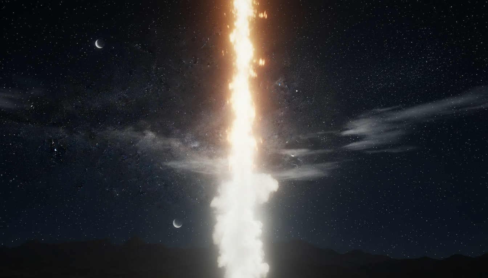

I
Iuda · Leadership
Founders
Tribul-leu, din care vin regii. Cei care pornesc lucruri de la zero — antreprenoriat, leadership, startup-uri și curajul primului pas.

O generație trezită de Dumnezeu. O armată care Îl înalță pe Cristos.
„Sculați-vă și străluciți, căci lumina voastră a venit." — Isaia 60:1Precum Israelul era organizat pe triburi în jurul Cortului Întâlnirii — tu ești în jurul lui Cristos, împreună cu tribul tău.
Tribul-leu, din care vin regii. Cei care pornesc lucruri de la zero — antreprenoriat, leadership, startup-uri și curajul primului pas.
Forța care ridică cetăți. Transformă ideea în structură concretă — construcție, inginerie, robotică, arhitectură.
Tribul preoților și al învățătorilor. Transmit mai departe ce au primit — educație creștină, mentorat, teologie, formare.
Întâiul-născut. Cei care vindecă și poartă de grijă — medicină, psihologie, consiliere, sănătate mintală, îngrijire.
Tâlcuitorul de vise, cel care vede înainte. Anticipează ce urmează — inovație, futurism, R&D, tehnologie emergentă.
Darul înțelegerii vremurilor. Analiștii generației — IT, software, data, AI, cercetare, strategie.
Țărmul mării și negoțul cu corăbii. Fac schimbul să funcționeze — comerț, vânzări, e-commerce, business.
Vocile generației — artă vizuală, design, muzică, scris creativ, film, foto, media, jurnalism, comunicare.
Tribul belșugului și al mesei pline. Primesc oamenii și creează experiențe — hospitality, gastronomie, turism, agricultură.
Numele lui înseamnă judecător. Apără cauze și oameni — drept, dreptate socială, ONG, activism pentru cei vulnerabili.
Cei care merg primii pe teren necunoscut — aventură, expediții, misiune, pionierat. (de definit împreună cu echipa)
Arcașii pricepuți. Corpul antrenat ca instrument — sport, performanță fizică, atletism, outdoor, expediții.
Nu un program. O întâlnire. Vrem să ajutăm o generație întreagă să fie trezită de Dumnezeu — o armată de tineri care Îl înalță pe Cristos și duce Evanghelia întregii lumi în această generație. Nu doctrine discutate. Isus trăit.
„Sculați-vă și străluciți, căci lumina voastră a venit." — Isaia 60:1Fiecare eveniment este construit în jurul atmosferei sfinte.
Cristos în centru, nu la periferie.
Transformare profundă, nu decizie de moment.
Nu doctrine discutate. Isus trăit.
Curând. Rămâi aproape.